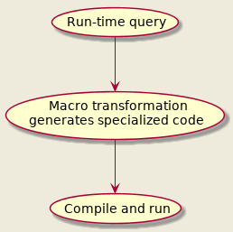

Uniform Structured Syntax, Metaprogramming and Run-time Compilation
or why you'd be doing yourself disservice not considering Lisp for "big data" processing
Table of Contents
1 Intro
Often times I hear the claim that (programming language) syntax doesn't matter or if it does, it's only to provide some subjective readability aesthetics. It's somewhat surprising to me how large majority of supposedly rational people like programmers/computer scientists would throw out objectivity with such confidence. So let me provide a simple real world case where uniform syntax enables out of the box solution which is qualitatively simpler. This is practically achievable (Turing-completeness doesn't help much) and idiomatic in very few languages and about a single one of them has the additional means and synergy to pull it off with great performance.
1.1 Too Long, Don't Read
We develop tiny SQL-like query engine from scratch in Common Lisp which performs on par with a cheating C++ version and handily outruns even more cheating Go version.
This is possible because CL compilers are competent, blazing quick and can be programmatically evoked at runtime over arbitrary just-in-time generated functions. This allows turning the task from the usual run-time interpreter hammering to an even simplified metaprogramming march. Generation and native compilation of specialized for any concrete query code is deferred right back to query (run) time. Where other languages must pre-compile recursive interpreter, CL compiles down a single if-condition.
As for code generation we have the full power of the language plus whatever we've additionally defined, we show off arguably the most powerful Common Lisp Object System (CLOS) in use. This combined with the fact that generating code in Lisp is isomorphic to writing "regular" code, makes the solution so simple, concise and elegant, it's difficult to imagine it does the same thing as those unsung geniuses writing low-level optimizing compilers in all those powerless non-Lisp languages.
2 The Problem
Here's our situation: there are over 100 let's say plain text dbs, each one containing lines of different fixed-size fields ASCII format. Let's assume lines within a single db have same format.
# excerpt from the record S5 db S5XXZSXX151217999999CBF X FLEX CONDITION S5YYF021160629999999IBG CY PE081CPETC201PET IN CABIN DOG # excerpt from the category 1 db 00100030530CNNX0211396626 NRNTR 00100030531CPNX 396627 NRNTR 00100030622UNN 11000000
So you can consider that each db has a schema where each field is located at a fixed offset from the beginning of the line. We have to provide subset of SQL-like operations over them1, for example:
SELECT cxr,subcode,commercial_name,date_disc FROM recordS5 WHERE cxr LIKE 'YY|XX' AND ((commercial_name LIKE 'PET' AND type='C') OR (type='F' AND commercial_name='MEAL')) AND date_disc < '180620' AND date_eff < date_disc SELECT COUNT(*) FROM category1 WHERE age_min <= 28 AND 28 <= age_max AND (tbl_no < '00050000' OR tbl_no > '01000000')
(cheers if you guess the domain from these, also no, I've never been affiliated with the well known Lisp company in that sector)
We'll have to iterate all db entries, check the WHERE filter over each line and extract information to be returned in case it passes. These queries can happen to run over billions of entries so we'll eye some "systems" language, band-aids like Python are out of question.
Let's focus only on the filter condition. WHERE is essentially a tree where intermediate nodes are boolean predicates and, or or not and leaves being concrete line field operation - comparison, regular expression matching, either with constant string or other field.
3 Approach I - Interpreter
So how do we go about it? A straightforward way is to create a tree structure instance mirroring the WHERE clause and a matcher which would traverse it for each line to see if the clause is satisfied.
3.1 WHERE tree
Let's skip over the tedious task of parsing a query and concentrate on how the WHERE part would be represented for processing:
struct WhereNode { public: OperationType op; // and, or, not, regex, stringEq, stringNotEq, stringLess, stringMore... // not used by and/or/not nodes FieldInfo field1; FieldInfo field2; // may not be applicable size_t cmpSize = 0; // comparison length in case of 2 fields, equals the shorter std::string filter; // literal filter if such std::regex regexFilter; // regex literal if such std::vector<WhereNode> children; // only and/or/not nodes have children bool match(const char *line) const; private: bool applyFieldOp(const char *line) const; }
3.2 WHERE matcher
Traverses the WHERE tree in depth first order and performs short-circuit evaluation:
bool WhereNode::match(const char *line) const { switch(op) { case OperationType::WhereAnd: { for(const auto &child : children) { if(!child.match(line)) return false; } return true; } case OperationType::WhereOr: { for(const auto &child : children) { if(child.match(line)) return true; } return false; } case OperationType::WhereNot: { assert(1 == children.size()); return !children.front().match(line); } default: return applyFieldOp(line); } }
If there's one problem with the above, it would probably be that match is recursive (and not in good tail-recursive way) so the compiler wouldn't be that jubilant. There probably is a way to linearize the WHERE tree but I'm a little concerned to think out in depth how to conserve the short-circuiting without backtracking and getting a headache.
3.3 Clause interpretation
For completeness, here's the leaf operation processor:
bool WhereNode::applyFieldOp(const char *line) const { switch(op) { case OperationType::WhereRegex: if(field2.isEmpty()) { return std::regex_search(line + field1.offset, line + (field1.offset + field1.size), regexFilter); } else { std::regex lineRegexFilter(line + field2.offset, field2.size); return std::regex_search(line + field1.offset, line + (field1.offset + field1.size), lineRegexFilter); } case OperationType::WhereSearch: return memmem(line + field1.offset, field1.size, filter.c_str(), filter.size()); default: break; } int cmpResult; if(field2.isEmpty()) { cmpResult = memcmp(line + field1.offset, filter.c_str(), filter.size()); } else { cmpResult = memcmp(line + field1.offset, line + field2.offset, cmpSize); } switch(op) { case OperationType::WhereEq: return cmpResult == 0; case OperationType::WhereNotEq: return cmpResult != 0; case OperationType::WhereLess: return cmpResult < 0; case OperationType::WhereLessEq: return cmpResult <= 0; case OperationType::WhereMore: return cmpResult > 0; case OperationType::WhereMoreEq: return cmpResult >= 0; } return false; }
We assume certain pre-processing is done while building the tree, like assigning proper operation type; checking if regex filter is not really regex, in which case getting downgraded to substring search etc.
For a complete solution we'd need a query parser (or may defer to something like JSON and use existing parser though that wouldn't be very ergonomic for interactive use) and another interpreter to translate and pre-process parsed tokens to the above data structure used in the hot loop.
4 Approach II - Compiler
4.1 Prelude
I actually didn't consider Approach I at all until much later, and that for educational purposes. It somehow seems artificial and more complex than the problem it solves. I mean, look at the SQL WHERE clause - it's a boolean expression almost inviting for immediate evaluation, why do we have to write tree traversal and not "just" use our language's built-in machinery?
Let's lay back and imagine the following scenario from days of yore - someone comes along and strikes:
Can you extract me this and that field where such and such conditions are met? Like in the next hour? Thankyouverymuch!
What then, one-off program? I bet in such case you'd write something quick & dirty, morally equivalent to:
const std::regex cxrRegex("YY|XX"); const std::string commercialNameRegex("PET"); bool match(const char *line) { return (std::regex_search(line + CXR_OFFSET, line + (CXR_OFFSET + CXR_SIZE), cxrRegex) && ((memmem(line + COMMERCIAL_NAME_OFFSET, COMMERCIAL_NAME_SIZE, commercialNameRegex.c_str(), commercialNameRegex.size()) && line[TYPE_OFFSET] == 'C') || (line[TYPE_OFFSET] == 'F' && memcmp("MEAL", line + COMMERCIAL_NAME_OFFSET, sizeof("MEAL") - 1) == 0)) && memcmp("180620", line + DATE_DISC_OFFSET, DATE_DISC_SIZE) < 0 && memcmp(line + DATE_EFF_OFFSET, line + DATE_DISC_OFFSET, DATE_DISC_SIZE) < 0); }
Which is about as simple and efficient (save for some clause reordering that can be done in order to push cheaper checks earlier) as one can get. No recursion, no switches, no loops. Some contrast to the general solution! Ignoring syntax noise, this is direct translation of the WHERE condition.
Now imagine if on receiving a query we could temporarily pause time, write a simple and efficient matcher tailored to the specific query, compile and then let it fly over the db. And remember to unpause cosmic time of course! We can dream, or…
4.2 Embedded domain specific languages
By the way did you notice how ugly the one-off thing looks? All those parenthesis… We declared interest only in "systems" languages but let's see how we'd approach this problem from Common Lisp's side2.
The usual thing to do is embed a DSL. We can represent the selection example like this:
(select (cxr subcode commercial_name date_disc) recordS5
:where (and (like cxr "YY|XX")
(or (and (like COMMERCIAL_NAME "PET")
(= type "C"))
(and (= type "F")
(= commercial_name "MEAL")))
(< "180620" date_disc)
(< date_eff date_disc)))
Don't know about you, but on my eyes this looks better than SQL's supposed to be humane syntax. A recurring theme in Lisp eDSL programming is that one first chooses nice succinct S-expression representation (leaving all parsing to the Lisp reader) and then is confident that will be able to transform it to whatever executable code is needed. We can of course implement Approach I now. But we can do better. Much better!
4.3 Select implementation
So select has to be macro (the chosen representation doesn't adhere to the function calling convention, for user convenience) which expands to procedure that maps over the given db, compiles (CL compilers are lightening fast) and then calls it. Note that during its macro expansion, it will be observing a concrete query so it can check out the db and its schema, what fields are selected, what is the exact WHERE clause. Instead of solving the problem for all possible queries as Approach I must, we can instead solve for this single case. That's our time pausing mechanism.
Since we are supposed to work over large dbs, we can gain a lot by first introspecting the request and specializing on its properties3. So let's make a little impromptu optimizing compiler! Don't freak out, it's surprisingly easy… in Lisp:
(defmacro select (field-list db &key where) "Generate selection procedure and run it." (let ((spec (get-spec db))) ;pull out the specification for this db `(funcall (compile nil (lambda () ;guarantee execution of a compiled object (declare (optimize (speed 3) (debug 0) (safety 1) (space 0))) (do-lines (line ,spec) ;bind line to db entries ;; if where is empty, condition is considered always satisfied (when ,(or (gen-where where 'line spec) t) ,(gen-print-selection field-list 'line spec))))))))
Here do-lines would be a macro that abstracts iteration over db entries. spec is for example structure/object instance which holds information about specific db - storage (file), entry size, field names with their offsets and sizes. I won't spell it out, you can imagine what methods working over it would do.
Result wise we can get away only with the body of the procedure enclosed by do-lines but depending on lisp implementation, this might get executed in interpreter mode4. However, in this case we want to explicitly ensure compilation happens.
4.4 Abstracting iteration
As a lyrical deviation, here's how we can implement iteration for our example flat file db representation:
(defmacro do-lines ((line-var spec) &body body) "Bind LINE-VAR to each line in SPEC specified file and execute BODY." (let ((ins (gensym)) ;make sure the file stream variable is not visible to the body (line-size (1+ (spec-size spec)))) ;line size is known, add 1 for newline `(let ((,line-var (make-string ,line-size :element-type 'base-char)));allocate line buffer (declare (type (simple-base-string ,line-size) ,line-var) (dynamic-extent ,line-var)) ;use stack allocation if possible (with-open-file (,ins ,(spec-path spec) :direction :input :external-format :ascii :element-type 'base-char) (loop while (= ,line-size (read-sequence ,line-var ,ins)) do ,@body)))))
See, that's what it takes to provide convenient zero cost syntactic abstraction for specialized file line iteration in spirit of the built-in dolist. No need to hack the compiler, pray to BDFL and/or assemble language committee for agreement.
Since entry size for particular db is fixed and known, we declare (the compiler might infer this type on its own without the declaration) and pre-allocate appropriately typed and sized line buffer and read entries within it. The declaration may further help the compiler elide array bound checks for the enclosed line operations.5
I didn't name this do-file-lines because it can be extended to handle other db storage types, key-value, SQL, whatever. This is the place to extend if we go for parallel processing too.
4.5 Generate WHERE tree
Let's look at the WHERE transformation. We can mirror the query tree and replace necessary parts (the leaves in this case) with "real" code:
(defun gen-where (where line-var spec) "Create actual boolean tree for WHERE. LINE-VAR is symbol representing the current line variable. SPEC contains fields' offset and size information." (when (consp where) (let ((op (first where))) (cond ((consp op) ;several expressions in a row, recurse (cons (gen-where op line-var spec) (gen-where (rest where) line-var spec))) ((member op '(and or not)) ;intermediate node, recurse (cons op (gen-where (rest where) line-var spec))) ((member op '(= /= < <= > >= like)) ;leaf (gen-field-op where line-var spec)) (t (error (format nil "Bad where clause: ~A" where)))))))
Where gen-field-op based on the field operation, fields and constants involved and given the specification for field offsets and sizes would generate appropriate code.
Amusingly this miniscule recursive, let's say transpiler, corresponds to the recursive match procedure in the Approach I solution. Only the former solves the problem partly at compile-time (macro expansion time if we have to be pedantic) and eliminates run-time recursion, while the latter is confined to roar only at run-time.
4.6 Transform WHERE clauses
As a little preparation for clause transformers, let's introduce some helpers:
(defclass operand-traits () ((offset :initarg :offset) (size :initarg :size) (filter :initarg :filter :initform nil))) (defmethod get-operand-traits ((operand string) spec) "Get dimensions of literal string OPERAND." (declare (ignore spec)) (make-instance 'operand-traits :offset 0 :size (length operand) :filter operand)) (defmethod get-operand-traits ((operand symbol) spec) "Get dimensions of field OPERAND according to SPEC." (make-instance 'operand-traits :offset (field-offset operand spec) :size (field-size operand spec)))
Above we introduce a class to represent both field references and constant string operands and (an implicit) generic function with couple of methods to dispatch the 2 cases. Here come the actual generators:
(defun gen-field-op (clause line-var spec) "Generate code for a leaf where CLAUSE." (destructuring-bind (op field1 field2) clause ;decompose clause (gen-field-clause op (get-operand-traits field1 spec) (get-operand-traits field2 spec) line-var))) (defun simple-regex? (str) "Check if string is not really a regex. This a bit pessimistic." (not (find-if-not #'alphanumericp str))) (defmethod gen-field-clause ((op (eql 'like)) field1 field2 line-var) "Generate code for regex clause." (with-slots ((offset1 offset) (size1 size)) field1 (with-slots ((offset2 offset) (size2 size) (filter2 filter)) field2 (cond ((null filter2) ;regex is taken from a field `(cl-ppcre:scan (subseq ,line-var ,offset2 :end ,(+ offset2 size2)) ,line-var :start ,offset1 :end ,(+ offset1 size1))) ((simple-regex? filter2) ;use plain search instead of regex `(search ,filter2 ,line-var :start1 ,offset2 :end1 ,(+ offset2 size2) :start2 ,offset1 :end2 ,(+ offset1 size1))) (t `(cl-ppcre:scan ,filter2 ,line-var :start ,offset1 :end ,(+ offset1 size1))))))) (defun translate-op (op &optional char?) "Return string/char operation corresponding to OP." (intern (concatenate 'string (if char? "CHAR" "STRING") (symbol-name op)))) (defmethod gen-field-clause (op field1 field2 line-var) "Generate code for a comparison clause." (with-slots ((offset1 offset) (size1 size) (filter1 filter)) field1 (with-slots ((offset2 offset) (size2 size) (filter2 filter)) field2 (let ((size (min size1 size2))) (if (= 1 size) ;optimize single character comparison (list (translate-op op t) (if filter1 ;string literal? (aref filter1 0) `(aref ,line-var ,offset1)) (if filter2 (aref filter2 0) `(aref ,line-var ,offset2))) (list (translate-op op) (or filter1 line-var) (or filter2 line-var) :start1 offset1 :end1 (+ offset1 size) :start2 offset2 :end2 (+ offset2 size)))))))
Again (an implicit) generic function through a couple of methods helps us differentiate between the regex matching and plain comparisons. Here's how the expanded WHERE part of the code will look like for our example:
;; bellow :ENDs are actually already folded constants (AND (CL-PPCRE:SCAN "YY|XX" LINE :START CXR-OFFSET :END (+ CXR-OFFSET CXR-SIZE)) (OR ;we can detect that "PET" is not really a regex (AND (SEARCH "PET" LINE :START1 0 :END1 3 ;and use plain search instead :START2 COMMERCIAL_NAME-OFFSET :END2 (+ COMMERCIAL_NAME-OFFSET COMMERCIAL_NAME-SIZE)) (CHAR= (AREF LINE TYPE-OFFSET) #\C)) ;specialize size 1 comparisons (AND (CHAR= (AREF LINE TYPE-OFFSET) #\F) (STRING= "MEAL" LINE :START1 0 :END1 4 :START2 COMMERCIAL_NAME-OFFSET :END2 (+ COMMERCIAL_NAME-OFFSET 4)))) (STRING< "180620" LINE :START1 0 :END1 6 :START2 DATE_DISC-OFFSET :END2 (+ DATE_DISC-OFFSET 6)) (STRING< LINE LINE :START1 DATE_EFF-OFFSET :END1 (+ DATE_EFF-OFFSET DATE_EFF-SIZE) :START2 DATE_DISC-OFFSET :END2 (+ DATE_DISC-OFFSET DATE_DISC-SIZE)))
Beside more readable, that's analogical to the C++ one-off version. From such base, we can apply other transformations like result-preserving boolean algebra or just reordering.
4.7 Loop unrolling
While the WHERE simplification is most substantial, other parts of the selection procedure can also enjoy improvement. Concretely, under Approach I one has to introduce cycle over the selected fields to print them. We can do this of course but Approach II allows such loop to be unrolled during the macro expansion phase. Why do this?
Because we can! More responsibly, combined with the above line size declaration, the compiler (if not sufficiently advanced to unroll on its own) will now be certain that all line operations are within array bounds. And will open opportunity for other optimizations. Here's how to do it:
(defun gen-print-selection (fields line-var spec) "Unroll selected FIELDS' print statements. LINE-VAR is symbol representing the current line variable. SPEC holds field offset details." `(progn ,@(loop for field in fields ;collect print statements in list and splice them collect `(write-string ,line-var nil :start ,(field-offset field spec) :end ,(+ (field-offset field spec) ;constant fold (field-size field spec)))) (format t "~%"))) ;newline
Which will expand to:
(PROGN (WRITE-STRING LINE NIL :START CXR-OFFSET :END (+ CXR-OFFSET CXR-SIZE)) ;these will actually be already summed numbers (WRITE-STRING LINE NIL ;not that the compiler wouldn't constant fold them anyway :START SUBCODE-OFFSET :END (+ SUBCODE-OFFSET SUBCODE-SIZE)) (WRITE-STRING LINE NIL :START COMMERCIAL_NAME-OFFSET :END (+ COMMERCIAL_NAME-OFFSET COMMERCIAL_NAME-SIZE)) (WRITE-STRING LINE NIL :START DATE_DISC-OFFSET :END (+ DATE_DISC-OFFSET DATE_DISC-SIZE)) (FORMAT T "~%"))
We can check if adjacent in the schema fields are selected next to each other and fold them within single write-string call. We can also unroll just some fields and leave a loop for the rest if too many, not to blow executable size. We are trying to help the compiler generate good code while the compiler is helping us generate good code. Escher would approve.
4.8 End result
Congratulations, we just made a working file query engine6! We designed a nice query language, outsourced all parsing to the Lisp reader, courageously went onto implementing a one-pass to source compiler (which in this case is easier than interpreter!) and even managed to sprinkle some optimizations. And on top of that, the language implementation borrowed us its "real" compiler (at run-time!) to optimize the expansion and generate machine code.
Let's assume Record S5 has fixed size of 56 bytes and field offsets and sizes:
| field | offset | size |
|---|---|---|
| cxr | 2 | 2 |
| type | 4 | 1 |
| subcode | 5 | 3 |
date_eff |
8 | 6 |
date_disc |
14 | 6 |
commercial_name |
40 | 16 |
We can enjoy the total of our efforts using macroexpand in the REPL:
CL-USER> (macroexpand '(select (cxr subcode commercial_name date_disc) recordS5
:where (and (like cxr "YY|XX")
(or (and (like COMMERCIAL_NAME "PET")
(= type "C"))
(and (= type "F")
(= commercial_name "MEAL")))
(< "180620" date_disc)
(< date_eff date_disc))))
(FUNCALL
(COMPILE NIL
(LAMBDA ()
(DECLARE (OPTIMIZE (SPEED 3) (DEBUG 0) (SAFETY 1) (SPACE 0)))
(LET ((LINE (MAKE-STRING 57 :ELEMENT-TYPE 'BASE-CHAR)))
(DECLARE (TYPE (SIMPLE-BASE-STRING 57) LINE)
(DYNAMIC-EXTENT LINE))
(WITH-OPEN-FILE (#:G616 #P"/path/to/recordS5.db" :DIRECTION :INPUT
:EXTERNAL-FORMAT :ASCII
:ELEMENT-TYPE 'BASE-CHAR)
(LOOP WHILE (= 57 (READ-SEQUENCE LINE #:G616))
DO (WHEN
(AND (CL-PPCRE:SCAN "YY|XX" LINE :START 2 :END 4)
(OR
(AND (SEARCH "PET" LINE :START1 0 :END1 3
:START2 40 :END2 56)
(CHAR= (AREF LINE 7) #\C))
(AND (CHAR= (AREF LINE 7) #\F)
(STRING= "MEAL" LINE :START1 0 :END1 4
:START2 40 :END2 44)))
(STRING< "180620" LINE :START1 0 :END1 6
:START2 14 :END2 20)
(STRING< LINE LINE :START1 8 :END1 14 :START2 14
:END2 20))
(PROGN
(WRITE-STRING LINE NIL :START 2 :END 4)
(WRITE-STRING LINE NIL :START 5 :END 8)
(WRITE-STRING LINE NIL :START 40 :END 56)
(WRITE-STRING LINE NIL :START 14 :END 20)
(FORMAT T "~%")))))))))
Which is about what one would write by hand if not lazy to unroll loops…and not afraid of magic constants. And nice starting point for the compiler to generate machine code before running it over the db.
In fact, in similar vein the cl-ppcre library used here goes a step further than usual compiled languages to build regex state machine scanners for constant literals (as is the case in our expansion) at compile-time thanks to a compiler macro. I hear people are still struggling to hack limited form of this with templates in C++?
4.9 Squeezing performance 1
With such simple, straightforward code and few declarations, the superb Steel Bank Common Lisp compiler in particular would be able to do respectable job. But performance in this case will still be 4-5 times slower than competent C++ version for the following prosaic differences:
- there's no buffering on file read while our entries may be quite small
- the operations we use require string types which are not direct representation of the file bytes, thus read-sequence has to apply conversion
The first requires adjusting only the do-lines macro:
(defconstant +max-buffer-size+ (* 1024 6) "Max chunk size to preload in bytes.") (deftype ub-char () '(unsigned-byte 8)) ;read file data in raw bytes because faster (defmacro do-lines ((line-var spec) &body body) "Bind LINE-VAR to each line in SPEC specified file and execute BODY." (let* ((entry-size (spec-size spec)) ;entry size is known (line-size (1+ entry-size)) ;add 1 for newline (buffer-size (if (< line-size +max-buffer-size+) (* line-size (floor +max-buffer-size+ line-size)) line-size)) (ins (gensym)) ;make sure the file stream variable is not visible to the body (buffer (gensym)) ;-//- for read buffer (bytes (gensym)) ;-//- for number of bytes read (offset (gensym))) ;-//- current line within buffer offset `(let ((,buffer (make-array ,buffer-size :element-type 'ub-char)) ;allocate read (,line-var (make-string ,entry-size :element-type 'base-char))) ;and line buffers (declare (dynamic-extent ,buffer ,line-var)) ;use stack allocation if possible (with-open-file (,ins ,(spec-path spec) :direction :input :element-type 'ub-char) (loop for ,bytes fixnum = (read-sequence ,buffer ,ins) ;read as many lines until (zerop ,bytes) ;; slide offset through the buffer do (loop for ,offset fixnum from 0 below (* ,line-size (floor ,bytes ,line-size)) by ,line-size ;; fill line with the current window bytes while converting them do (loop for i fixnum from 0 below ,entry-size for j fixnum from ,offset do (setf (aref ,line-var i) (code-char (aref ,buffer j)))) ,@body)))))) ;the body only sees the line variable as before
Skeleton is same as before, we only add a buffer dedicated to reading several lines at once and then slide through it, copying and converting bytes to the line variable. With this, performance goes around 1.5 - 2 times slower than C++. But we can do better!
4.10 Squeezing performance 2
To go further we can try to leave aside copying and converting raw bytes and instead apply comparisons directly over them (what C++ does). So I Quicklisp-ed the ascii-strings contrib of the cl-string-match library to help with this. Unfortunately I couldn't find substitute for the regex matcher that works on byte arrays, so we'd still have to make conversion for fields which are matched against regex.
This requires changes mostly in gen-field-clause and friends, slight adjustment to gen-print-selection and removing the line conversion loop from the improved do-lines. Here's a prototype sketch of the desired expansion (#. is a reader macro which evaluates the following expression at read-time):
(lambda () (declare (optimize (speed 3) (debug 0) (safety 0) (compilation-speed 0))) (let ((buffer (make-array #.(* 57 (floor +max-buffer-size+ 57)) ;raw byte buffer :element-type 'ub-char)) ;;pre-allocated string used for regex matching (line (make-string 56 :element-type 'base-char))) (declare (dynamic-extent buffer line)) ;stack allocate (with-open-file (in #P"/path/to/recordS5.db" :direction :input :element-type 'ascii:ub-char) (loop for bytes fixnum = (read-sequence buffer in) ;load as many lines at once until (zerop bytes) do (loop for offset fixnum from 0 below (* 57 (floor bytes 57)) by 57 do (when ;for each entry in the loaded chunk (and (progn ;fill bytes of this field in string (loop for i fixnum from 2 below 4 ;before regex matching for j fixnum from (+ offset 2) do (setf (aref line i) (code-char (aref buffer (+ offset i))))) (cl-ppcre:scan "XX|YY" line :start 2 :end 4)) (or ;convert filter string to bytes at macro expansion (and (search #.(ascii:string-to-ub "PET") ;the PET thing will turn to #(80 69 84) buffer :start1 0 :end1 3 ;and match against :start2 (+ offset 40) ;the raw field bytes :end2 (+ offset 56)) (= (aref buffer (+ offset 7)) #.(char-code #\C)));convert char to byte (and (= (aref buffer (+ offset 7)) #.(char-code #\F)) (and ;MEAL comparison (= (aref buffer (+ offset 40)) 77) (= (aref buffer (+ offset 41)) 69) (= (aref buffer (+ offset 42)) 65) (= (aref buffer (+ offset 43)) 76)))) (cond ;"180620" comparison ((/= 49 (aref buffer (+ offset 14))) (< 49 (aref buffer (+ offset 14)))) ((/= 56 (aref buffer (+ offset 15))) (< 56 (aref buffer (+ offset 15)))) ((/= 48 (aref buffer (+ offset 16))) (< 48 (aref buffer (+ offset 16)))) ((/= 54 (aref buffer (+ offset 17))) (< 54 (aref buffer (+ offset 17)))) ((/= 50 (aref buffer (+ offset 18))) (< 50 (aref buffer (+ offset 18)))) (t (< 48 (aref buffer (+ offset 19))))) (cond ;eff < disc dates ((/= (aref buffer (+ offset 8)) (aref buffer (+ offset 14))) (< (aref buffer (+ offset 8)) (aref buffer (+ offset 14)))) ((/= (aref buffer (+ offset 9)) (aref buffer (+ offset 15))) (< (aref buffer (+ offset 9)) (aref buffer (+ offset 15)))) ((/= (aref buffer (+ offset 10)) (aref buffer (+ offset 16))) (< (aref buffer (+ offset 10)) (aref buffer (+ offset 16)))) ((/= (aref buffer (+ offset 11)) (aref buffer (+ offset 17))) (< (aref buffer (+ offset 11)) (aref buffer (+ offset 17)))) ((/= (aref buffer (+ offset 12)) (aref buffer (+ offset 18))) (< (aref buffer (+ offset 12)) (aref buffer (+ offset 18)))) (t (< (aref buffer (+ offset 13)) (aref buffer (+ offset 19)))))) (progn ;; (write-string line nil :start 2 :end 4) ? (loop for i fixnum from (+ offset 2) below (+ offset 4) do (write-char (code-char (aref buffer i)))) (loop for i fixnum from (+ offset 5) below (+ offset 8) do (write-char (code-char (aref buffer i)))) (loop for i fixnum from (+ offset 40) below (+ offset 56) do (write-char (code-char (aref buffer i)))) (loop for i fixnum from (+ offset 14) below (+ offset 20) do (write-char (code-char (aref buffer i)))) (format t "~%"))))))))
Now, that begins to look a bit more compilish. Here's what changed:
- use raw byte comparison operations; convert constant filters to raw bytes during macro expansion; add current line offset to field offsets since now working over the buffer
- unroll all non-regex comparisons
- lazily fill parts of line before regex matching; optionally, in case a field is matched in multiple places (not the case for this query), we can mark its first byte position with special character at the start of line validation to signal that it has to be filled and can skip filling on subsequent operations over the same line
I won't go into detailed implementation, the previous snippets should have shown how programmatically manipulating code in Lisp is indistinguishable from juggling with data. These adjustments are not really rocket science. You can see a more elaborate and complete implementation in fdbq.
4.11 Measurements
After the above squeezing, here are processing times I observe with analogical query over a little 1GB db with 6.4 million entries sized 159 (sequential scan takes 0.4 seconds at best) with couple of idealized one-off versions (not real solutions of course) for reference:
| Language | Implementation | Approach | Threads | Time (sec) |
|---|---|---|---|---|
| Common Lisp | SBCL 1.4.10 | II | 4 | 1.30 |
| C++ | GCC 8.2 -O3 | I7 | 4 | 1.30 |
| C++ | Clang 6.0.1 -O3 | I7 | 4 | 1.34 |
| C++ | GCC 8.2 -O3 | one-off | 1 | 2.42 |
| C++ | Clang 6.0.1 -O3 | one-off | 1 | 2.49 |
| Common Lisp | Clozure 1.128 | II | 4 | 2.62 |
| C++ | GCC 8.2 -O3 | I7 | 1 | 2.70 |
| C++ | Clang 6.0.1 -O3 | I7 | 1 | 2.76 |
| Common Lisp | SBCL 1.4.10 | II | 1 | 2.90 |
| Go | Go 1.10.3 | one-off | 1 | 4.02 |
| Common Lisp | Clozure 1.12 | II | 1 | 5.04 |
| Python | CPython 3.7.0 | one-off | 1 | 15.50 |
| Python | CPython 2.7.15 | one-off | 1 | 18.07 |
(the parallelized C++ versions are straightforward memory map based, while the CL complete solutions still use sequential file reads)
Not bad for a "slow" dynamic language! Anyway, CL and SBCL's single thread disadvantage here comes from:
- absence of regex matcher which works over byte arrays rather than strings
- sequence comparisons are not vectorized for now (though the unrolling pretty much neutralizes that)
How does it compensate during parallelization? It may have something to do with the excellent lparallel library allowing easily wipe a scheme which better saturates the CPUs while playing well with the system caches.
5 Addendum
5.1 Manual JIT
Here's the essence of Approach II:

I like to call this tactic of plugging Ahead-Of-Time compilation on the fly (run-time) over newly assembled specialized code "Manual Just-In-Time compilation". Works at a higher level than "automatic" JIT and opens opportunities for greater while orthogonal gain and as seen - even algorithm simplification. This doesn't work (at least is not portable) for languages which leave only minimal dead skeleton of the program for run-time like…er, about all compiled languages (unless greenspunning). It's idiomatic and easily available in most Lisps through macros. Common Lisp is especially suited with:
- compiler can be explicitly evoked at run-time (the compile function)
- per function re/compilation over several dimensions and levels of optimization
- per function disassembly
- optional type declarations
- designed for system evolution, including CLOS9, the object system
- truly multi-paradigm without pushing ahead any particular style10
Some CL implementations can leverage type declarations to rival static language AOT compilers11. SBCL has certain ability to perform type inference during compilation and beside type errors, even provides hints where and why a micro-optimization couldn't be applied to guide type declaration refinements:
source.lisp:4:3:
note:
forced to do GENERIC-+ (cost 10)
unable to do inline fixnum arithmetic (cost 2) because:
The second argument is a NUMBER, not a FIXNUM.
The result is a (VALUES NUMBER &OPTIONAL), not a (VALUES FIXNUM &REST T).
unable to do inline (signed-byte 64) arithmetic (cost 5) because:
The second argument is a NUMBER, not a (SIGNED-BYTE 64).
The result is a (VALUES NUMBER &OPTIONAL), not a (VALUES (SIGNED-BYTE 64)
&REST T).
etc.
As the examples show, Common Lisp actually has unexpectedly rich type system. Combine this with metaprogramming (where Lisps excel at) and one can generate pretty trimmed static code where needed.
The ability to see how a function's disassembly changes after code adjustments is also quite helpful and insightful.
5.1.1 Eval?
I can hear you say:
THE PARENTHESIS, MY EYES! Sir, just use "modern" dynamic language which provides eval.
And you'd be right with these caveats:
- string manipulation to cover random syntax is uncomfortable and error prone
- the possible alternative of building explicit internal AST objects is more robust but just as clunky and non composable
- it's still interpretation, not compilation
- huge majority of dynamic languages which are not Lisps are indeed pathetically slow (LuaJIT, Julia being exceptions, though the latter is rather Lisp with default random syntax12)
In contrast to random-syntax code-is-a-string/file-blob languages, Lisps deal with already parsed trees basically all the time. Simple and reliable to generate, traverse, transform. DSLs become so easy to implement, it feels like cheating.
5.1.2 Quasi-quotation remark
Nowadays there's multitude of languages that bolt on quasi-quote macros in the style of Common Lisp backquote expressions. And people are quick to assume that Lisps are now completely assimilated by more mainstream languages, yadda yadda (obviously never heard of CLOS or CL's condition system). Some of them are even statically typed, though these often have limitations on what can be done at compile time. They are normally nice enough to easily implement syntax sugar like the simple version of do-lines. But once a task gets a bit harder like having to introspect, generate non trivially structured code and/or combine transformations - implementation (if at all possible) degrades to undecipherable syntax noise that requires PhD to figure out. And the reason is that unlike Lisps, their random syntax is hardly representative of the abstract syntax trees the interpreter/compiler works with. So they invent yet another random syntax sub-language to bridge them. These ain't "acceptable Lisps".
5.2 Life stages of a program
Where metaprogramming power comes from? Beside the infamous uniform structured syntax which allows duality between code and data, Lisps normally make distinction between several possibly interleaving and recurring phases of program existence and provide hooks into them. Or rather rewrite rules. And what language would you reprogram them in, some dumb pre-processor or half-assed template engine? No, it's turtles all the way!
| Phase | Description | Control entry point | Common Lisp | Racket13 | Scheme | Clojure |
|---|---|---|---|---|---|---|
| Read-time | the moment a set of characters is fed to the Lisp reader | reader macros | o | o | SRFI-10 | x |
| Macro expansion time | actually initial part of compile-time, regular macros are expanded on demand | macros | o | o | o | o |
| Compile-time | when compiler is just about to assemble runnable (possibly machine) code, all reader and regular macros have already been expanded and only functions left | compiler macros | o | ? | x | x |
| Run-time | execution | functions | o | o | o | o |
While the above seems like the natural sequence of "events" - read, compile, can additionally happen at any time as any other function call (one of several reasons to prefer functions to macros when in doubt). Notice how the select macro is knitted together by amalgam of built-in and user defined functions and macros. Here's wildly approximate sketch how it may bounce around the phases after user invocation:
5.3 Image based development and deploy
Think Lisp tricks end here? Common Lisp like Smalltalk is not just a compiler but an image environment. The image initially contains just the core language (and reader + compiler and/or interpreter) and is incrementally extended and changed during development/user interaction. Be it by loading libraries, re/defining functions, constants, re/setting global variables, executing code with side effects etc.
How would one produce user facing executable? Dump the current image14. This opens opportunity to also embed data within the image before dumping which would otherwise have to be loaded, parsed, pre/processed during execution.
For our little query engine such data are the configuration specifications for the multiple dbs. These rarely change and makes sense to be parsed down to particular structure instances and put into a global hash table variable for example before dump thus becoming available and ready to use immediately on image execution. This would additionally improve executable's latency for queries.
5.4 Alternative syntax
One may object that all falls into place only if we "limit" users to S-expression DSLs. What if forced to literary provide SQL syntax? Common Lisp in particular has reprogrammable reader through reader macros which allows performing read-time transformation (before "regular" macro expansion time) of more funky syntax (with some limits) to good ole S-expressions. We'll have to do some parsing by ourselves, like animals, but using this would allow us keep rest of our solution unchanged.
6 Further reading
Looking at conference materials, lispers (at least the Common breed) at times take advantage of such techniques15 for difficult problems but seem troubled to gain attention of the outside world.
I've been cheering for the Gentle Introduction to Compile-Time Computing series to really launch for deeper descend into the matter but even the outline can suggest what sort of magic is possible.
Traditional recommendations for macro black belting are On Lisp: Advanced Techniques for Common Lisp and its logical successor Let Over Lambda. The Art of the Metaobject Protocol is the bible of object system metaprogramming. Paradigms of Artificial Intelligence Programming: Case Studies in Common Lisp is an instructive showoff how complex systems become not so complex with a powerful language and clear idea.
Most of the above require CL familiarity. If one lacks such, A road to Common Lisp is an excellent getting started guide. Newcomers are generally recommended Practical Common Lisp or if more humourous: Land Of Lisp; more seasoned practitioners: Common Lisp Recipes. For an advanced development environment, one can try Portacle or possibly Lem if not much into Emacs.
Footnotes:
One may rightfully note that such data seems plain meant for SQL storage. There are some complications in reality including size, performance needs and slight deviations from the fixed format why this is not done.
Although Common Lisp (CL) is dynamically typed (also strongly typed) and everyone "knows" such languages are doomed to be slow, CL is rare exception. One reason is history. Lisps were the primordial wave of dynamic languages and had to run acceptably on quite limited hardware compared to nowadays. Thus they were crafted in ways where possibility for performance optimizations were kept in sight and with Moore's law still progressing - they were gradually catching up the statically typed languages. To the point where operating systems were written from the ground up. With Common Lisp being merger of the original line of dialects, there are many places in its specification where freeways for implementations to perform optimizations are present.
The interpreter approach in a "usual" (or as they say - blub) language should also do this before the iteration begins but there's no way to specialize the code structure at that point, only the data.
Some CL implementations work only as interpreters, others only as compilers. It will be all the same in such case. Talking of CL implementations, there's bunch of standard compliant ones with different pros and cons - here's slightly outdated survey on most of them. Probably the biggest omission is the recent Clasp implementation.
Array bound checks should be unconditionally elided within the (safety 0) optimization level. In case we decide to go berserk… like C/C++'s only mode of operation for POD types.
If one may object that C++ code in this article is somewhat less, thus perceivably simpler - remember, it presents just smaller part of a full solution.
That's Approach I without actual query parsing, just a mocked up specific WHERE tree instance. So not quite a real solution either, thus times are a bit optimistic. Yeah, I'm lazy (and life's too short for so much C++ ceremony).
For instance see the Redefining Classes machinery in the Common Lisp HyperSpec.
Beside metaprogrammability and being as imperative as it gets, CL sports fantastic object system, has adequate out of the box support for functional style and lower level bit-twiddling at the same time. Generally, it can assimilate many outside paradigms as if they were native thanks to being the programmable programming language. There are library extensions for logic programming, expert systems, nondeterministic and constraint programming, pattern matching, dataflow… which normally blend with rest of the language, just like user code becomes indistinguishable from the core functionality.
See The Computer Language Benchmarks Game to get rough idea. With all the usual toy micro benchmark disclaimers, Common Lisp/SBCL's competitiveness against statically typed languages is kind of embarrassing to the latter. And that's using same algorithms.
Julia can almost match Common Lisp for this query engine thing. However, it seems to only be able to invoke (implicitly) the compiler at run-time for generated functions which only see argument types. This is not sufficient for our queries. Thus eval interpretation has to be used and the compiler wouldn't be able to optimize the run-time generated code. In this case Approach I being subject to "normal" AOT compilation may well fare better. In contrast, with Common Lisp we are able to explicitly summon the compiler with full optimization over arbitrary generated function.
The table is from Common Lisp's perspective but Racket seems to have even more elaborate macro phase system. Part of the reason is Racket, being a Scheme descendant, has single namespace for functions and variables (Lisp-1). And all those crazy academics!